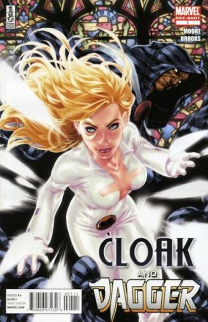
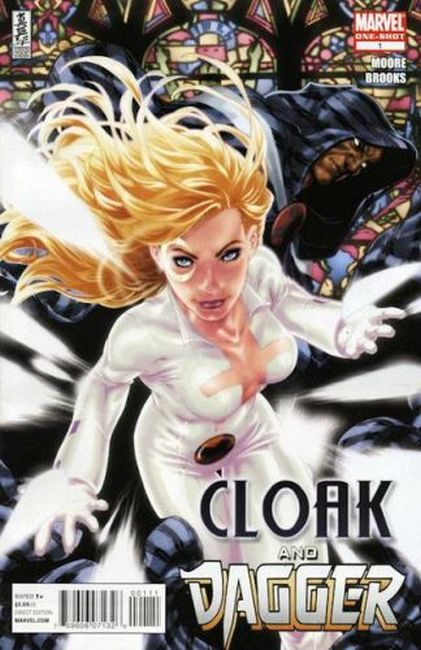

 1983 #1: "The Priest!" Written by Art and cover by Rick Leonardi and Terry Austin. Before the Runaways, there was Cloak and Dagger. The heroes of Dark and Light seek sanctuary with Father Delgado. But forces from without seek to tear them apart. NOTE: Ed Hannigan is credited as co-creator. The whole issue was sketched by Hannigan and these sketches were reprinted in Marvel Age.
1985 #1: Cover pencils by Rick Leonardi, inks by Terry Austin. Sinners All!, script by Bill Mantlo, pencils by Rick Leonardi, inks by Terry Austin; Cloak and Dagger take down a porno shop employing slave labor; Dagger decides to visit her birth mother after getting the information from Father Delgado; origin retold.
1988 #1: Blind Salvation!" Guest-starring X-Factor. Written by Terry Austin. Art by Dan Lawlis and P. Craig Russell. Story continued from Strange Tales (1987 2nd Series) #18. The Darkness has consumed Dagger! Can Xavier's First Class of X-Men stop her rampage without hurting her, or getting killed themselves?!
2010 #1: Written by Stuart Moore. Art and Cover by Mark Brooks. Marvel's most-requested duo return in this all-new one-shot, spinning out of X-MEN: NATION X! Cloak - dark, brooding teleporter. Dagger - deadly, shining mistress of light. Having quit the Dark X-Men, Cloak and Dagger find their partnership strained as they struggle to fit in among the mutants of Utopia. But when a new menace targets Cloak, Dagger must make a fateful choice for both of them. Guest-starring the X-Men.